British Museum
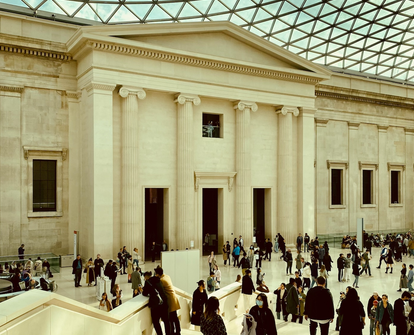
The British Museum in London holds millions of objects from across human history and culture, including the Rosetta Stone.
Explore some of the world's greatest museums and the art within.

The British Museum in London holds millions of objects from across human history and culture, including the Rosetta Stone.
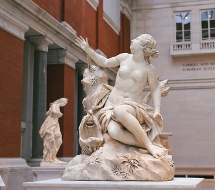
The Metropolitan Museum of Art in New York City is one of the largest art museums in the world, home to the Temple of Dendur.
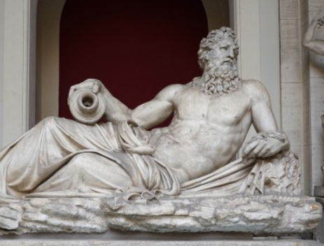
The Vatican Museums in Vatican City lead to the Sistine Chapel famous for Michelangelo's painted ceiling.
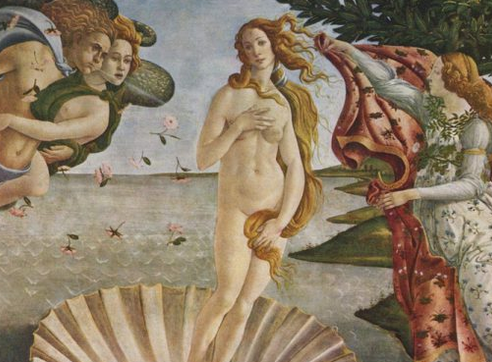
The Uffizi Gallery in Florence, Italy, is famous for Renaissance masterpieces such as Botticelli's The Birth of Venus.
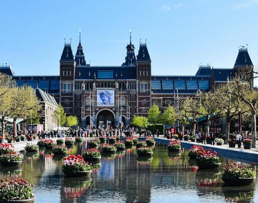
The Rijksmuseum in Amsterdam is the national museum of the Netherlands famous for Dutch Golden Age art including Rembrandt's The Night Watch.
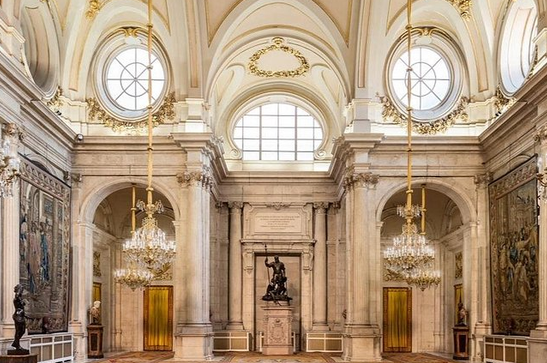
The Prado Museum in Madrid, Spain, is known for its collection of European art, including Velázquez's Las Meninas and works by Goya.
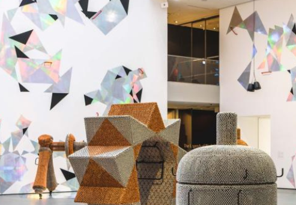
The Museum of Modern Art in New York City is home to Van Gogh's The Starry Night.
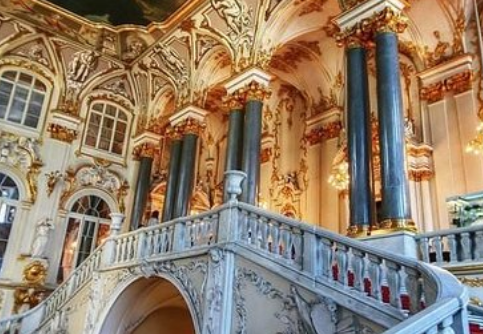
The Hermitage Museum in St. Petersburg, Russia, is housed in the former Winter Palace of the Russian emperors and holds millions of works of art and cultural artifacts.
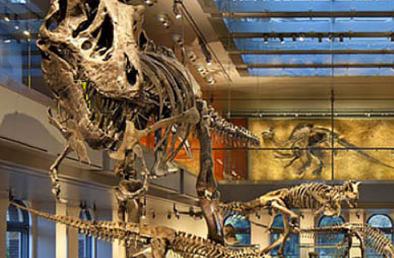
The Natural History Museum is a museum dedicated to the study of dinosaurs, mammals, and other organisms on earth.
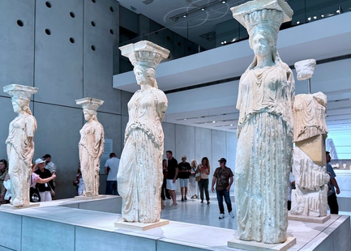
The Acropolis Museum in Athens, Greece, displays ancient sculptures and artifacts found on the Acropolis hill.
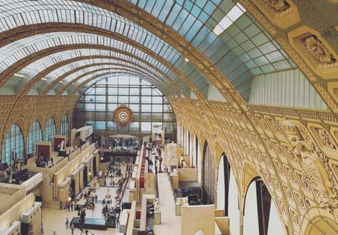
The Musée d'Orsay in Paris is housed in a former railway station and is famous for its collection of Impressionist and Post Impressionist art.
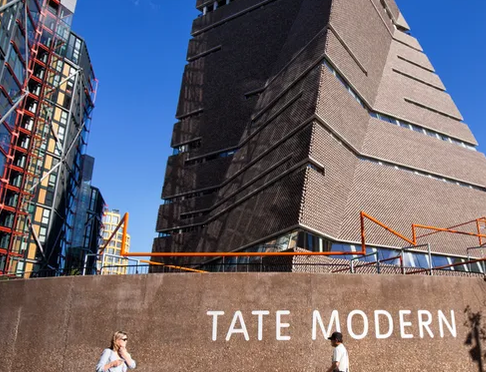
Tate Modern in London is a modern art gallery in a former power station.
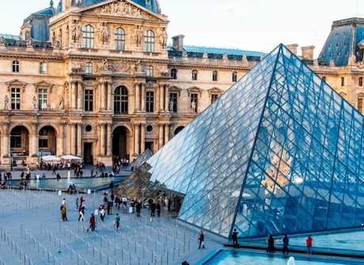
The Louvre in Paris, France is the most visited museum in the world. It was once a royal palace and now holds art from ancient civilizations to the 19th century.
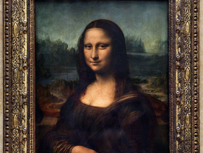
Leonardo da Vinci's portrait is the most famous painting in the world.
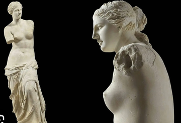
An ancient Greek marble statue of the goddess of love famous for its missing arms.
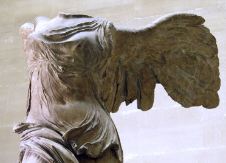
The Winged Victory of Samothrace is an ancient Greek statue which stands at the top of a grand staircase.
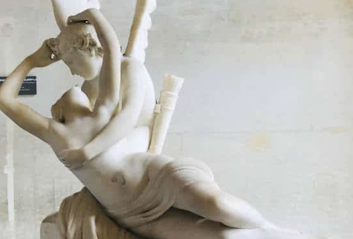
This sculpture is in the same section as Michelangelo. It was sculpted by Antonio Canova.